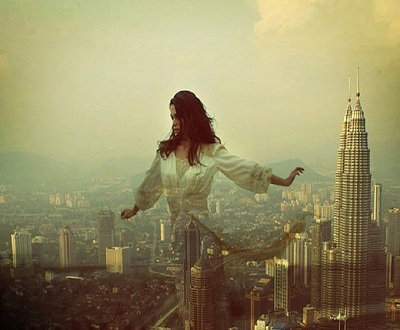
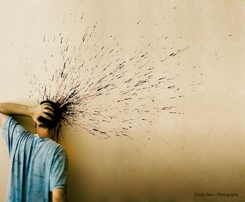
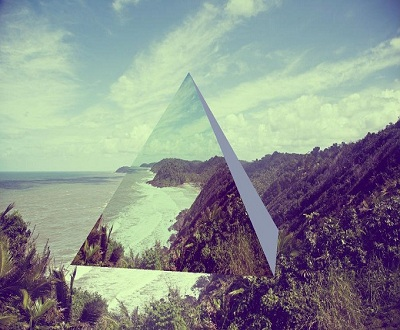
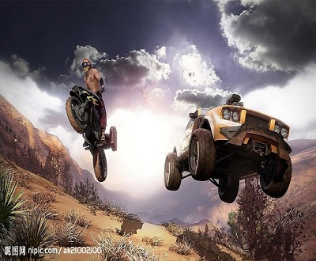
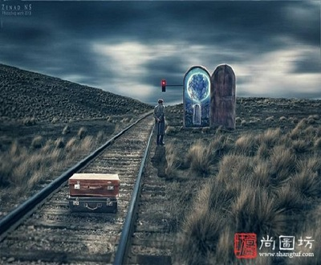
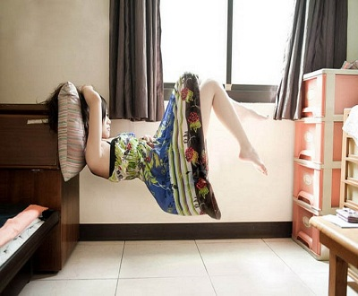

<!DOCTYPE html>
<html lang="en">
<head>
	<meta charset="UTF-8">
	<title>仿flash幻灯片</title>
	<link rel="stylesheet" href="style/style.css">
</head>
<body>
	<div id="container">
		<!-- <div id="img">
			
			
			
			
			
			
			
			
		</div> -->
		<!-- 直接图片的高度动的话，图片会变形压缩。 -->
		<ul id="img">
			<li></li>
			<li></li>
			<li></li>
			<li></li>
			<li></li>
			<li></li>
			<li></li>
			<li></li>
		</ul>
		<div id="thumb">
			<ul>
				<li sytle = "opacity:1; filter: alpha(opacity:100)"></li>
				<li></li>
				<li></li>
				<li></li>
				<li></li>
				<li></li>
				<li></li>
				<li></li>
			</ul>
		</div>
		<div id="prev">
			<span></span>
		</div>
		<div id="next">
			<span></span>
		</div>
	</div>
	<script>
		function getStyle(elem,attr){
			if(elem.currentStyle){
				return elem.currentStyle[attr]; 
			}else if(window.getComputedStyle){
				return window.getComputedStyle(elem,false)[attr];
			}
		}
		function doMove(elem,attr,dest){
			clearInterval(elem.timer);
			elem.timer = setInterval(function(){

				var currentStyle;
				if( attr == 'opacity' ){
					currentStyle = parseInt(getStyle(elem,'opacity')*100);
				}else{
					currentStyle = parseInt(getStyle(elem,attr));
				}

				var iSpeed = (dest - currentStyle) / 8;
				iSpeed = iSpeed>0?Math.ceil(iSpeed):Math.floor(iSpeed);

				if(currentStyle == dest){
					clearInterval(elem.timer);
				}else{

					if(attr == 'opacity'){
						elem.style.opacity = (currentStyle + iSpeed)/100;
						elem.style.filter = 'alpha(opacity' + (currentStyle + iSpeed) + ')';
					}else{
						elem.style[attr] = currentStyle + iSpeed +'px';
					}
				}
			},30);
		}
		function selectImg(idx){
			//没有对象的函数，this直接指向window，所以要给个参数。
			//这里利用索引，来传。
			for(var i=0; i<aLi.length; i++){
					aImg[i].className ="";
					doMove(aLi[i],'opacity',40);
				}
				doMove(aLi[idx],'opacity',100);

				index = idx;

				aImg[idx].className = "selected";
				aImg[idx].style.height = 0;
				doMove(aImg[idx],'height',330);

				// doMove(oThumb,'left',dest);
				if(index==0){
					doMove(oThumbUl,'left',0);
				}else if(index==aLi.length-1){
					doMove(oThumbUl,'left',-(index-2)*(aLi[0].offsetWidth+10));
					//如果将margin-right:10；，变成padding-right：10:；那么用offsetwidth就不用加上10，offsetwidth包括，conten，padding，border。
				}else{
					doMove(oThumbUl,'left',-(index-1)*(aLi[0].offsetWidth+10));
				}
		}

		var oPrev = document.getElementById('prev');
		var oNext = document.getElementById('next');
		var oArrowPrev = oPrev.getElementsByTagName('span')[0];
		//TagName找到的是数组，只不过只有一个元素的数组，第0个。
		var oArrowNext = oNext.getElementsByTagName('span')[0];
		oPrev.onmouseover = function(){
			doMove(oArrowPrev,'opacity',100)
		};
		oPrev.onmouseout = function(){
			doMove(oArrowPrev,'opacity',0)
		};
		oNext.onmouseover = function(){
			doMove(oArrowNext,'opacity',100)
		};
		oNext.onmouseout = function(){
			doMove(oArrowNext,'opacity',0)
		};
		oArrowPrev.onclick = function(){
			index--;
			if(index == -1){
				index = aLi.length - 1;
			}
			selectImg(index);
		};
		oArrowNext.onclick = function(){
			index++;
			if(index == aLi.length){
				index = 0;
			}
			selectImg(index);
		};

		var oThumb = document.getElementById('thumb');
		var oThumbUl = oThumb.getElementsByTagName('ul')[0];//只有一个标签要加[0].
		var aLi = oThumb.getElementsByTagName('li');
		var oImg = document.getElementById('img');
		// var aImg = oImg.getElementsByTagName('img');
		var aImg = oImg.getElementsByTagName('li');

		var index=0;//代表当前索引值
		oThumb.style.width = aLi[0].offsetWidth * aLi.length + 10 * aLi.length + 'px';
		for(var i=0; i<aLi.length;i++){
			aLi[i].onmousemove = function(){
				doMove(this,'opacity', 100);
			};

			aLi[i].onmouseout = function(){
				if(index != this.index){
					doMove(this,'opacity', 40);
				}
			};

			aLi[i].index = i;
			aLi[i].onclick = function(){
				// for(var i=0; i<aLi.length; i++){
				// 	aImg[i].className ="";
				// 	doMove(aLi[i],'opacity',40);
				// }
				// doMove(this,'opacity',100);

				// index = this.index;

				// aImg[this.index].className = "selected";
				// aImg[this.index].style.height = 0;
				// doMove(aImg[this.index],'height',330);
				selectImg(this.index);
			};
		}


		


	</script>
</body>
</html>